교통기사 (2022-03-05 기출문제)
1과목: 교통계획
1. 도로의 배치에서 주간선도로와 보조간선도로의 배치 간격 기준은?
- 1000m 내외
- 750m 내외
- 500m 내외
- 200m 내외
(정답률: 69%)

2. TSM 기법 중 승용차의 수요와 교통시설의 공급을 동시에 감소시키는 기법과 거리가 먼 것은?
- 기존 차로를 이용한 버스전용차로제
- 승용차 통행 제한 구역의 설정
- 노상주차 시설 확대
- 주차면적 감소
(정답률: 72%)
3. 선형적 효용함수의 독립변수인 통행시간(분)과 통행비용(원)에 대한 계수가 각 –0.017, 0.00⑤ 일 때 시간가치(value of time)는?
- 24원/분
- 29원/분
- 32원/분
- 34원/분
(정답률: 50%)
4. 외국의 C-ITS 도입 사례가 아닌 것은?
- 캐나다 SCC
- 일본 ITS Spot
- 유럽 Drive C2X
- 미국 Connected Vehicle
(정답률: 67%)
5. 아래의 설명에 해당하는 대중교통 요금구조는?
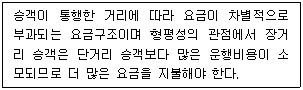
- 거리요금제
- 표본요금제
- 균일요금제
- 정기요금제
(정답률: 96%)
6. 할인율이 20%일 경우 2년 후 발생한 수익 100만원의 순현재가치는 약 얼마인가?
- 69만원
- 92만원
- 144만원
- 120만원
(정답률: 27%)
7. 도로교통량 조사에서 수시조사를 시행하는 요일 기준에 해당하지 않는 것은? (단, 해당 요일은 휴가철, 명절, 연휴 등 교통량에 영향을 주는 시기가 아니라고 가정한다.)
- 화요일
- 수요일
- 목요일
- 금요일
(정답률: 69%)
8. 수단선택(model split) 단계에서 사용하는 모형 중 장래의 존별 통행발생량을 산출한 후 통행분포 전에 이용 가능한 교통수단별 분담률을 산정하여 각 수단별 통행수요를 도출하는 것은?
- OD pair Model
- 통행단 모형(Trip end Model)
- 엔트로피 모형(Entropy Model)
- 전환곡선 모형(Diversion Curves Model)
(정답률: 53%)
9. 현재 존간 통행량이 아래와 같을 때 균일성장률법에 따른 장래의 존별 통행량이 옳은 것은? (단, tij : 장래의 존 i와 j간의 통행량)
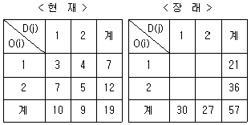
- t11 = 9, t12 = 12, t21 = 21, t22 = 15
- t11 = 10, t12 = 11, t21 = 20, t22 = 16
- t11 = 11, t12 = 10, t21 = 19, t22 = 17
- t11 = 12, t12 = 9, t21 = 18, t22 = 18
(정답률: 66%)
10. 택시요금의 변화에 따라 버스수요의 변화정도를 설명하는 개념은?
- 가격탄력성
- 공급탄력성
- 교차탄력성
- 소득탄력성
(정답률: 60%)
11. 일반 시내 도로 상에 버스 우선 통행 기법을 도입할 때 나타나는 효과와 거리가 먼 것은?
- 버스 정시성 확보
- 버스 운행 비용 감소
- 버스 통행의 신속성 증가
- 버스 통행을 위한 시설 비용 감소
(정답률: 46%)
12. 교통체계운영(TSM)에 대한 설명으로 옳은 것은?
- 주로 단기적인 교통체계 운영 전략이다.
- 대중교통수단의 요금 규정 운영 전략이다.
- 교통지구의 교통 관련 산업 경영 전략이다.
- 장기적이고 종합적인 교통체계 운영 전략이다.
(정답률: 67%)
13. 장기교통계획과 단기교통계획의 특성을 비교한 내용으로 옳지 않은 것은?
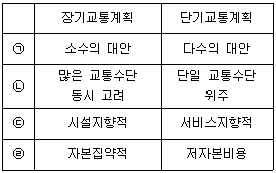
- ㉠
- ㉡
- ㉢
- ㉣
(정답률: 67%)
14. 통행발생(trip generation)단계에서 사용되는 분석 방법은?
- 카테고리분석법
- 전환곡선법
- 프로빗모형
- 로짓모형
(정답률: 69%)
15. 교통수요예측을 위한 자료 수집에서 표본의 전수화과정이 필요 없는 경우는?
- 교통정책목표달성 측정치 산출
- 통행량의 시계열적 변화 및 추세 파악
- 교통모형의 계수 값(parameter) 추정을 위한 모형정산 과정
- 무작위 표본자료(random sample)가 아닌 표본자료를 이용한 모형 정산 시 가중치 계산
(정답률: 35%)
16. 교통사업의 평가 방법 중 경제적 효율성 분석방법이 아닌 것은?
- 내부수익률 방법
- 순현재가치 방법
- 편익-비용비 방법
- 메쉬 분석방법
(정답률: 77%)
17. 아래에서 가정기반통행(home-based trip)의 통행량은?
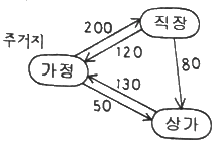
- 160 통행
- 250 통행
- 500 통행
- 580 통행
(정답률: 72%)
18. 교통조사에서 표본설계 시 사용하는 표본추출방법을 확률추출법과 비확률(유의)추출법으로 구분할 때, 다음 중 비확률추출법에 해당하는 것은?
- 계통추출법
- 집락추출법
- 다단추출법
- 응모추출법
(정답률: 48%)
19. 경전철(LRT)의 일반적인 특성으로 옳지 않은 것은?
- 차량의 중량이 가볍다.
- 승객승차대가 낮아 승·하차시 편리하다.
- 중량전철에 비해 단위 건설비가 많이 든다.
- 시간당 수송용량이 중량전철보다 적은 편이다.
(정답률: 74%)
20. P요소법에 대한 설명으로 옳지 않은 것은?
- 차량의 평균승차인원을 고려하여 주차수요을 추정한다.
- 지구나 도심지와 같은 특정한 장소의 주차수요 예측에 적합하다.
- 주차수요결정에 필요한 각종 요소를 얻을 수 있는 경우 적합한 방법이다.
- 원단위법에 비하여 여러 가지 지역 특성을 포괄적으로 고려하지 못하는 단점이 있다.
(정답률: 74%)
2과목: 교통공학
21. 차량의 평균 속도가 50km/h, 평균 차두간격이 25m 일 때 도로의 평균 교통량은?
- 500대/시간
- 800대/시간
- 1000대/시간
- 2000대/시간
(정답률: 66%)
22. 일반지형의 평지인 고속도로 기본 구간의 차종별 구성비와 승용차 환산계수가 아래와 같을 때, 중차량보정계수(fHV)는?
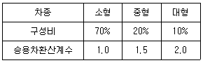
- 0.36
- 0.46
- 0.56
- 0.83
(정답률: 55%)
23. 도로의 기능에 따른 구분 중, 접근성이 가장 좋은 도로는?
- 고속도로
- 국지도로
- 집산도로
- 간선도로
(정답률: 64%)
24. 교차로 교통통제의 목적으로 거리가 가장 먼 것은?
- 사고감소 및 예방
- 주도로에 통행우선권 부여
- 부도로 통과교통의 상층면적 확대
- 교차로 용량 증대 및 서비스 수준 향상
(정답률: 67%)
25. 차량 속도의 변화에 따라 미끄럼 마찰계수의 변동폭이 가장 큰 노면 및 타이어상태에 해당하는 것은?
- 습윤 – 마모된 타이어
- 건조 - 양호한 타이어
- 건조 - 마모된 타이어
- 습윤 - 양호한 타이어
(정답률: 62%)
26. 구간별 교통류의 상태가 아래와 같을 때, 그 경계면 AA에서 후방 충격파의 속도는?
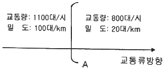
- 3.75 km/시
- 4.00 km/시
- 5.43 km/시
- 7.25 km/시
(정답률: 60%)
27. 다음 중 도심부 신호교차로의 서비스수준을 분석할 때 고려하는 지체가 아닌 것은?
- 균일지체(uniform delay)
- 상관지체(interaction delay)
- 증분지체(incremental delay)
- 추가지체(initial queue delay)
(정답률: 53%)
28. 차량추종이론(car-following)에 관한 설명으로 옳지 않은 것은?
- 반응시간은 운전자의 민감도에 의해 결정된다.
- 민감도가 지나치게 크면 교통류의 불안요소가 커지는 것이 일반적이다.
- 추종이론은 거시적 관점에서 차량의 움직임을 설명하는 교통류 이론이다.
- 고속도로에서 후미차량이 앞 차량과 유사한 움직임을 보이는 것을 설명하는데 활용될 수 있다.
(정답률: 64%)
29. 어느 도로의 한 지점에서의 차량 통행량은 12대/분이다. 그 지점에서 교통조사를 시작하고 10초동안 한 대의 차량도 도착하지 않을 확률은? (단, 포아송 분포를 따른다고 가정한다.)
- 10.2%
- 11.3%
- 12.4%
- 13.5%
(정답률: 42%)
30. 다음 중 도로상을 운행하는 차량의 구간속도 산출 시 이용되는 조사 방법이 아닌 것은?
- 번호판 판독법
- 시험차량 운행법
- 주행차량 이용법
- 노측면접법
(정답률: 55%)
31. 3현시로 운영되는 신호교차로에서 총 v/s의 합이 0.87 현시당 손실시간이 3초인 경우 Webster 방법에 의한 최적신호주기는? (단, 주기는 계산결과에 따라 소수점 이하는 버린 수치를 기준으로 한다.)
- 96초
- 128초
- 142초
- 177초
(정답률: 55%)
32. 교차로 신호운영 방법 중 좌회전과 직진의 동시신호와 분리신호에 대한 설명이 옳지 않은 것은?
- 동시신호로 할 경우 차로를 공유할 수 있다.
- 원칙적으로 교차로 용량에는 큰 차이가 없다.
- 동시신호는 좌회전 교통량이 직진에 비해 현저히 적을 때 유리하다.
- 분리신호와 동시신호는 교차로와 교통특성에 따라 선택한다.
(정답률: 39%)
33. 시간평균속도와 공간평균속도에 대한 설명 중 옳은 것은?
- 시간평균속도는 도로 구간의 길이와 관련된 속도로 교통류 분석 시 주로 이용되며, 공간평균속도는 속도 분석, 교통사고 분석 시 주로 이용된다.
- 공간평균속도는 일정 시간 동안 도로의 한 지점을 통과하는 모든 차량의 평균속도이다.
- 공간평균속도는 각 차량 속도의 산술평균값, 시간평균속도는 각 차량 속도의 조화평균값이다.
- 교통 흐름이 전혀 변하지 않는 경우를 제외하고 공간평균속도는 항상 시간평균속도보다 작다.
(정답률: 58%)
34. 그림과 같은 병목흐름에서 도착 및 출발하는 차량수를 누적시킨 시간-차량 누적 곡선에 대한 설명으로 옳지 않은 것은?
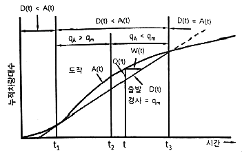
- 시각 t에서의 대기행렬의 길이는 Q(t)이다.
- 시각 t에 도착한 차량의 대기시간은 W(t)이다.
- t1에서 시작하여 t3점까지 대기행렬이 존재한다.
- 총 대기행렬의 규모는 A(t)곡선과 D(t)직선 사이 면적의 1/2 이다.
(정답률: 62%)
35. 주기가 90초인 신호교차로에서 어느 한 접근로의 직진교통량이 500vph, 포화교통량이 2000vph 이었다. 이 직진 교통류의 녹색신호시간이 35초 일 때 포화도는 얼마인가? (단, 황색시간은 3초, 손실시간은 3.3초 이다.)
- 0.55
- 0.65
- 0.95
- 1.15
(정답률: 62%)
36. 지점조사에서 얻은 차량 4대의 순간속도가 30, 40, 50, 60(km/h)일 경우 공간평균속도는?
- 45.0km/h
- 42.1km/h
- 47.6km/h
- 40.8km/h
(정답률: 58%)
37. 다음 중 용량산정에 앞지르기시거가 적용되는 도로시설은?
- 간선도로
- 오르막차로
- 고속도로
- 2차로 도로
(정답률: 54%)
38. 신호교차로 접근로에서 두 개의 차로를 사용하는 좌회전 차량의 포화교통류율이 1800대 시/차로, 신호주기가 180초, 유효녹색시간이 60초 일 때 해당 좌회전 차로의 총 용량은?
- 600대/시
- 900대/시
- 1200대/시
- 1500대/시
(정답률: 37%)
39. 설계시간계수(K)에 대한 설명으로 옳지 않은 것은?
- 일반적으로 연평균 일교통량이 큰 도로에서는 설계시간계수가 감소한다.
- 설계시간교통량(DHV)은 계획목표년도의 연평균 일교통량(AADT)과 설계시간계수(K)를 곱하여 산출한다.
- 일반적으로 지방지역 도로가 도시지역 도로보다 높은 값을 가진다.
- 설계시간계수가 클수록 교통 수요 변화가 작다.
(정답률: 67%)
40. 지점속도조사의 목적으로 가장 거리가 먼 것은?
- 전후 조사를 통한 교통개선사업의 효과 평가
- 적절한 교통규제 및 제어시설의 결정
- 운전자 반응시간 정상 모형 검증
- 차종별 속도 평균 판단
(정답률: 43%)
3과목: 교통시설
41. 도로의 용량에 영향을 미치는 요인으로 거리가 먼 것은?
- 차로 폭
- 차량의 구성비
- 시간대별 교통량 분포
- 도로가 위치한 지역의 연평균 강수량
(정답률: 69%)
42. 설계속도가 120km/h 인 고속국도에 설치하는 버스정류장의 최소 길이 기준은? (단, 직접식인 경우)
- 600m 이상
- 540m 이상
- 470m 이상
- 420m 이상
(정답률: 60%)
43. 종단선형에서 일반적으로 볼록형 종단곡선의 최소길이가 결정되는 기준은?
- 도로 폭
- 배수시설
- 곡선반경
- 소요시거
(정답률: 30%)
44. 접근성과 이동성에 따라 도로를 구분할 때 고려해야 하는 특성과 거리가 가장 먼 것은?
- 평균 통행거리
- 평균 주행속도
- 토지 면적
- 출입제한의 정도
(정답률: 57%)
45. 우회전 도류로의 폭을 결정하는데 필요한 요소와 거리가 가장 먼 것은?
- 노면상태
- 설계기준자동차
- 평면곡선 반지름
- 도류로의 회전각
(정답률: 62%)
46. 길어깨의 주요 기능으로 틀린 것은?
- 유지관리가 양호한 길어깨는 도로의 미관을 높인다.
- 유지 관리 작업 공간이나 지하매설물의 설치 공간을 제공한다.
- 절토부에서는 곡선부의 시거를 한정시켜 교통 통제에 탁월한 효과를 갖는다.
- 차도, 보도, 자전거·보행자도로에 접속하여 도로의 주요 구조부를 보호한다.
(정답률: 53%)
47. 인터체인지의 형식 중 클로버형과 비교하여 다이아몬드형이 갖는 특징이 아닌 것은?
- 건설비가 적게 든다.
- 점유면적이 적게 든다.
- 교통의 우회거리가 짧은 편이다.
- 주도로부터의 분기점이 다양하여 표지 설치가 복잡하다.
(정답률: 58%)
48. 설계기준자동차의 최소 회전반지름의 정의로 옳은 것은?
- 차량의 안쪽 앞바퀴 외측선의 최소 회전반지름
- 차량의 바깥쪽 뒷바퀴 중심선의 최소 회전반지름
- 차량의 안쪽 뒷바퀴 외측선의 최소 회전반지름
- 차량의 바깥쪽 앞바퀴 중심선의 최소 회전반지름
(정답률: 34%)
49. 아래와 같은 교통조건을 가진 도로의 적정 황색신호시간은?
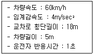
- 약 2.5초
- 약 3.5초
- 약 4.5초
- 약 5.5초
(정답률: 55%)
50. 평면교차로 도류화의 목적으로 틀린 것은?
- 자동차의 통행속도를 안전한 정도로 통제한다.
- 평면교차로 면적을 넓혀 차량 간 상충면적을 줄인다.
- 보행자 안전지대를 설치하기 위한 장소를 제공한다.
- 교통제어시설을 잘 보이는 곳에 설치하기 위한 장소를 제공한다.
(정답률: 46%)
51. 피크시 건물 연면적 1000m2 당 주차 발생량이 150대 일 때, 연면적이 3000m2인 건물의 주차수요는? (단, 주차이용효율은 60%이며 원단위법에 따른다.)
- 300대
- 450대
- 750대
- 900대
(정답률: 53%)
52. 보도의 유효폭은 보행자의 통행량과 주변 토지 이용 상황을 고려하여 결정하되, 최소 몇 m 이상으로 하여야 하는가? (단, 기타의 경우는 고려하지 않는다.)
- 1m
- 1.5m
- 2m
- 2.5m
(정답률: 50%)
53. 교통안전표지 중 규제표지의 모양으로 옳지 않은 것은?
- 원
- 삼각형
- 팔각형
- 사각형
(정답률: 50%)
54. 주차장법규상 자주식주차장으로서 지하식 또는 건축물식 노외주차장의 벽면에서부터 50cm 이내를 제외한 주차장 출구 바닥면의 최소 조도(照度) 기준으로 옳은 것은?
- 10럭스
- 100럭스
- 50럭스
- 300럭스
(정답률: 46%)
55. 설계속도가 100km/h 이상인 도시지역 도로( ㉠ )와 설계속도가 100km/h 이상인 지방지역 도로( ㉡ )에 설치하는 중앙분리대의 최소 폭 기준이 옳은 것은? (단, 자동차 전용도로의 경우는 고려하지 않는다.)
- ㉠ 1.5m, ㉡ 1.0m
- ㉠ 1.0m, ㉡ 2.0m
- ㉠ 2.0m, ㉡ 1.5m
- ㉠ 2.0m, ㉡ 3.0m
(정답률: 45%)
56. 도로 포장에 사용되는 콘크리트 포장 형식 중, 횡방향 줄눈을 없애고 종방향 철근을 연속적으로 사용하여 콘크리트 슬래브에서 발생하는 크랙을 억제하는 것은?
- 무근 콘크리트 포장(JCP)
- 섬유보강 콘크리트 포장(FCP)
- 연속철근 콘크리트 포장(CRCP)
- 단경간 철근 콘크리트 포장(JRCP)
(정답률: 67%)
57. 화물터미널 설계 시 고려해야 할 시설로 거리가 가장 먼 것은?
- 화물적하대
- 여객관제시설
- 주유소, 정비소
- 아프론(적하대 전면 기동공간)
(정답률: 59%)
58. 평면곡선의 최소길이를 정할 때 고려할 사항이 아닌 것은?
- 운전자가 핸들조작에 곤란을 느끼지 않도록 한다.
- 규정된 평면곡선의 최소길이는 최소 완화구간의 길이와 같다.
- 평면곡선의 최소길이는 약 4~6초 간 주행할 수 있는 길이 이상을 확보하는 것이 좋다.
- 도로 교각이 작은 경우에는 평면곡선 반지름이 실제의 크기보다 작게 보이는 착각을 피할 수 있도록 한다.
(정답률: 57%)
59. 도로의 구조·시설 기준에 관한 규칙상 설계속도가 100km/h 이고 적용 최대 편경사가 6%인 차도의 최소 평면곡선 반지름 기준으로 옳은 것은?
- 530m
- 460m
- 440m
- 420m
(정답률: 45%)
60. 도로의 선형을 설계할 때 고려해야 할 사항으로 틀린 것은?
- 자동차 주행 시 안전성과 쾌적성을 유지하도록 설계한다.
- 선형 설계 시 최대한 지형에 맞추고 설계속도는 고려하지 않는다.
- 공사비와 편익의 균형이 잡혀 경제적인 타당성을 갖도록 설계한다.
- 운전자의 시각적 및 심리적 측면에서 양호하도록 설계한다.
(정답률: 64%)
4과목: 도시계획개론
61. 도시·군계획시설의 결정·구조 및 설치 기준에 관한 규칙에 따른 용도지역별 도로율 기준에 옳은 것은? (단, 기타 사항은 고려하지 않는다.)
- 녹지지역은 10% 이상 20% 미만이며, 이 경우 간선도로의 도로율은 5% 이상 10% 미만이어야 한다.
- 주거지역은 15% 이상 30% 미만이며, 이 경우 간선도로의 도로율은 8% 이상 15% 미만이어야 한다.
- 상업지역은 20% 이상 30% 미만이며, 이 경우 간선도로의 도로율은 10% 이상 15% 미만이어야 한다.
- 공업지역은 20% 이상 30% 미만이며, 이 경우 간선도로의 도로율은 5% 이상 10% 미만이어야 한다.
(정답률: 48%)
62. 도시조사를 위해 활용하는 자료 중, 토지·건축 관련 행정 자료에 포함되지 않는 것은?
- 산업총조사보고서
- 토지이용계획확인원
- 토지특성조사표
- 건축물대장
(정답률: 61%)
63. 지리정보시스템(GIS)에 대한 설명으로 틀린 것은?
- 도형자료는 점, 선, 면의 형태로 이루어져 있다.
- 자료를 다양한 방법과 관점에서 통합하여 모델링할 수 있다.
- 지리적 정보를 이용하여 데이터베이스를 구축·관리할 수 있다.
- 속성자료는 3차원의 화상으로 이루어져 있다.
(정답률: 58%)
64. 다음 중 주로 도시 내부의 공간 구조 형성을 설명하는 이론이 아닌 것은?
- 다핵 이론
- 선형 이론
- 동심원 이론
- 중심지 이론
(정답률: 43%)
65. 격자형 가로망에 대한 설명으로 틀린 것은?
- 지형이 평탄한 도시에 적합하다.
- 고대 및 중세 봉건도시에서 흔히 볼 수 있다.
- 방사형에 비해 토지 이용 상 결함이 있다.
- 도로 기능의 다양성이 결여되기 쉽다.
(정답률: 48%)
66. 주거단지계획에서 슈퍼블록(super block)을 구성함으로써 얻는 효과로 가장 거리가 먼 것은?
- 완전한 보차분리가 가능하다.
- 커뮤니티시설의 중심 배치에 따라 간선도로변의 활성화가 가능하다.
- 충분한 공동의 오픈스페이스 확보가 가능하다.
- 건물을 집약화 함으로써, 고층화·효율화가 가능하다.
(정답률: 40%)
67. 다음 중 계획가와 계획 도시(안)의 연결이 틀린 것은?
- 르 꼬르뷔제 : 빛나는 도시(Radinat City)
- 테일러 : 위성도시(Satellite City)
- 마타 : 선상도시(Linear City)
- 페리 : 래드번(Radburn)
(정답률: 58%)
68. 도시화를 집중적 도시화, 분산적 도시화, 역도시화의 3단계로 구분할대 역도시화에 대한 설명으로 가장 거리가 먼 것은?
- 도시권 전체의 인구가 감소하는 단계
- 각종 도시기능들이 도심지역을 중심으로 집중하기 시작하는 단계
- 도시 규모가 커지게 되어 집적의 불이익이 집적의 이익보다 커지는 단계
- 도시의 인구 이주가 U-턴 또는 J-턴 현상이 발생하는 단계
(정답률: 55%)
69. 현재 A도시의 인구가 300만명이고 연평균 증가율이 4%라면 10년 후의 추정인구는? (단, 등차급수법에 따른다.)
- 340만명
- 400만명
- 420만명
- 440만명
(정답률: 40%)
70. 공원·녹지체계의 유형 중 단지 내 녹지를 한 곳으로 모으는 경우로 녹지가 대형화되어 생태적으로 안정성이 높아지는 녹지로의 도달 거리가 길어져 접근성이 낮아질 수 있는 유형은?
- 격자형(格子形)
- 대상형(帶狀形)
- 분산형(分散形)
- 집중형(集中形)
(정답률: 58%)
71. 도시를 구성하는 토지와 시설에 대한 물리적 계획의 3대 요소에 해당하지 않는 것은?
- 밀도
- 배치
- 동선
- 경관
(정답률: 53%)
72. 지리적·공간적 차원으로서 인간정주사회의 최소 단위인 하나의 인간에서 출발하여 15단계의 공간 단위로 분류한 학자는?
- 게데스(Patrick Geddes)
- 독시아디스(C. A. Doxiadis)
- 케빈 린치(Kevin Lynch)
- 레이먼드 언윈(RAymond Unwin)
(정답률: 50%)
73. 다음 중 건폐율의 정의로 옳은 것은?
- 대지면적에 대한 연면적의 비율
- 대지면적에 대한 공지면적의 비율
- 건축면적에 대한 연면적의 비율
- 대지면적에 대한 건축면적의 비율
(정답률: 48%)
74. 혼잡한 주요도로의 교차지점에서 각종 차량과 보행자를 원활히 소통시키기 위하여 필요한 곳에 설치하는 교통광장은?
- 근린광장
- 교차점광장
- 주요시설광장
- 역전광장
(정답률: 62%)
75. 특별시·광역시·특별자치시·특별자치도·시 또는 군의 관할 구역에 대하여 기본적인 공간 구조와 장기발전방향을 제시하는 종합계획으로서 도시·군관리계획 수립의 지침이 되는 계획은?
- 국가계획
- 광역도시계획
- 지구단위계획
- 도시·군기획계획
(정답률: 53%)
76. 가도시화 현상에 대한 설명으로 옳은 것은?
- 몇 개의 대도시와 그 주변 도시들의 융합되는 도시화 현상
- 대도시 중심부의 기능이 약화되어 도시의 공간구조가 도시 주변 지역 중심으로 바뀌는 현상
- 도시의 부양능력에 비해 지나치게 많은 인구가 도시에 집중하여 인구만 비대해진 도시화 현상
- 낙후 지역의 효과적인 개발을 위해 잠재력이 큰 지점이나 지방 도시에 대한 집중 투자로 발생하는 도시화 현상
(정답률: 40%)
77. 참여형 도시계획으로서 주민참여 도시만들기의 우리나라 최근 동향이라고 볼 수 없는 것은?
- 특정한 주제를 깊이 다룬다.
- 주민참여를 의무화하고 있다.
- 주민의 참여시기가 빨라지고 있다.
- 주민의 참여방법이 다양화되고 있다.
(정답률: 45%)
78. E. Howard가 제안한 전원도시 계획안에 대한 설명이 틀린 것은?
- 인구 규모를 3~5만명으로 한다.
- 도시 주변으로 대규모의 공업지대를 우선 유치하고 식량은 철도를 통해 타 도시로부터 공급받는 것을 원칙으로 한다.
- 시가지에는 충분한 오픈 스페이스를 확보한다.
- 계획집행의 철저를 기하기 위해 토지를 공유화한다.
(정답률: 60%)
79. 도시지역과 그 주변지역의 무질서한 시가화를 방지하고, 계획적·단계적인 개발을 도모하기 위하여 일정 기간 동안 시가화를 유보하고자 지정하는 구역은?
- 시가화개선구역
- 시가화정비구역
- 시가화조정구역
- 시가화유도구역
(정답률: 55%)
80. 19세기 중반 파리 개조 계획을 전개한 사람은?
- Lynch
- Mumford
- Haussnann
- Hall
(정답률: 39%)
5과목: 교통관계법규
81. 도로교통법상 교통안전시설(신호기 및 안전표지)의 원칙적인 설치·관리권자에 해당하는 자는? (단, 유료도로법에 따른 유료 도로의 경우는 고려하지 않는다.)
- 지방경찰청장
- 시설관리공단장
- 국토교통부장관
- 군수(광역시의 군수 제외)
(정답률: 10%)
82. 도로교통법령상 횡단보도의 설치 기준과 관련한 아래 설명에서 ( ) 에 들어갈 내용으로 옳은 것은?
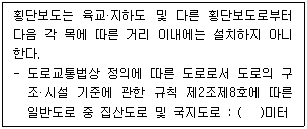
- 50
- 100
- 150
- 200
(정답률: 31%)
83. 주차장법령상 노외주차장의 출입구가 1개인 경우, 차로의 너비 기준이 가장 긴 주차형식은? (단, 이륜자동차전용 노외주차장이 아닌 경우)
- 직각주차
- 평행주차
- 45도 대향 주차
- 60도 대향 주차
(정답률: 45%)
84. 국가통합교통체계효율화법령상 타당성 평가 펼가와 예비타당성조사 결과의 비교에서 현저한 차이가 발생한 경우로 인정하는 기준이 옳은 것은? (단, 교통 수요 예측 결과 기준)
- 해당 타당성 평가 실시 결과가 예비타당성조사 실시 결과보다 100분의 5 이상 증감한 경우
- 해당 타당성 평가 실시 결과가 예비타당성조사 실시 결과보다 100분의 10 이상 증감한 경우
- 해당 타당성 평가 실시 결과가 예비타당성조사 실시 결과보다 100분의 20 이상 증감한 경우
- 해당 타당성 평가 실시 결과가 예비타당성조사 실시 결과보다 100분의 30 이상 증감한 경우
(정답률: 46%)
85. 도로법상 비용부담의 원칙과 관련한 아래 내용 중, ㉠과 ㉡에 들어갈 내용이 순서대로 모두 옳은 것은?
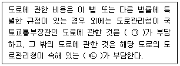
- ㉠ 국토교통부, ㉡ 지방자치단체
- ㉠ 국토교통부, ㉡ 지방경찰청
- ㉠ 국가, ㉡ 지방자치단체
- ㉠ 국가, ㉡ 지방경찰청
(정답률: 32%)
86. 주차장법령상 노상주차장의 구조·설비기준으로 옳지 않은 것은? (단, 지방자치단체의 조례로 따로 정하는 경우는 고려하지 않는다.)
- 고속도로·자동차전용도로로 또는 고가도로에 설치하여서는 아니 된다.
- 도로의 너비 또는 교통 상황 등을 고려하여 그 도로를 이용하는 자동차의 통행에 지장이 없도록 설치하여야 한다.
- 너비 6미터 이상의 도로에 설치해서는 안 된다.
- 주차대수 규모가 20대 이상 50대 미만인 경우 장애인 전용주차구획을 1면 이상 설치하여야 한다.
(정답률: 48%)
87. 주차장법령상 평행주차형식 외의 경우에서 일반형 주차단위 구획의 너비와 길이 기준으로 옳은 것은?
- 너비 2.0미터 이상, 길이 5.0미터 이상
- 너비 2.0미터 이상, 길이 5.1미터 이상
- 너비 2.5미터 이상, 길이 5.0미터 이상
- 너비 2.5미터 이상, 길이 5.1미터 이상
(정답률: 39%)
88. 도로교통법상 차로와 차로를 구분하기 위하여 그 경계지점을 안전표지로 표시한 선은?
- 연식선
- 중앙선
- 차선
- 경계선
(정답률: 62%)
89. 도시교통정비 촉진법상 교통유발부담금의 부과·징수권자는?
- 시장
- 구청장
- 지방경찰청장
- 행정안전부장관
(정답률: 43%)
90. 대중교통의 육성 및 이용촉진에 관한 법률상 아래와 같은 목적으로 지정하는 것은?
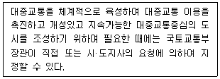
- 대중교통시범도시
- 대중교통혁신도시
- 대중교통협력도시
- 대중교통행복도시
(정답률: 50%)
91. 도시교통정비 촉진법상 국토교통부장관이 도시교통정비지역으로 지정·고시할 수 있는 대상 지역 기준은? (단, 도농복합형태의 시의 경우는 읍·면 지역을 제외한 지역이다.)
- 인구 10만명 이상의 도시
- 인구 20만명 이상의 도시
- 인구 30만명 이상의 도시
- 인구 50만명 이상의 도시
(정답률: 58%)
92. 도시교통정비 촉진법령상 시장 또는 군수는 도시교통정비 중기계획의 단계적 시행에 필요한 연차별 시행계획을 몇 년 단위로 수립하여야 하는가?
- 1년
- 2년
- 3년
- 5년
(정답률: 32%)
93. 도로법상 도로의 등급이 높은 것부터 낮은 순서로 옳게 나열한 것은?
- 고속국도-특별시도-일반국도-지방도
- 고속국도-특별시도-지방도-일반국도
- 고속국도-일반국도-특별시도-지방도
- 고속국도-일반국도-지방도-특별시도
(정답률: 53%)
94. 대도시권 광역교통 관리에 관한 특별법령상 대도시권의 범위 기준과 관련하여, 다음 중 부산·울산권에 해당하지 않는 것은?
- 부산광역시
- 울산광역시
- 경상남도 양산시
- 경상남도 창녕군
(정답률: 69%)
95. 도로법상 고속국도에 관한 설명으로 옳지 않은 것은?
- 고속국도의 도로관리청은 국토교통부장관이다.
- 고속국도는 도로교통망의 중요한 축을 이루며 주요 도시를 연결하는 도로로서 자동차 전용의 고속교통에 사용되는 도로 노선을 정하여 지정·고시한 것이다.
- 고속국도에서는 자동차만을 사용해서 통행하거나 출입하여야 한다.
- 고속국도와 다른 도로·철도·궤도를 교차시키려는 경우에는 특별한 사유가 없으면 평면교차시설로 하여야 한다.
(정답률: 59%)
96. 국가통합교통체계효율화법상 국토교통부장관이 수립하여야 하는 환승센터 및 복합환승센터 구축 기본계획의 수립 주기 기준으로 옳은 것은?
- 3년
- 5년
- 10년
- 20년
(정답률: 35%)
97. 대도시권 광역교통 관리에 관한 특별법령상 광역교통 개선대책을 수립하여야 하는 대규모 개발사업의 면적 및 수용인구(인원) 기준이 옳은 것은?
- 면적이 100만제곱미터 이상이거나 수용인구(인원)기준이 1만명 이상인 것
- 면적이 100만제곱미터 이상이거나 수용인구(인원)기준이 2만명 이상인 것
- 면적이 50만제곱미터 이상이거나 수용인구(인원)기준이 1만명 이상인 것
- 면적이 50만제곱미터 이상이거나 수용인구(인원)기준이 2만명 이상인 것
(정답률: 32%)
98. 교통안전법상 국가교통안전기본계획은 몇 년 단위로 수립하여야 하는가?
- 1년
- 3년
- 5년
- 10년
(정답률: 60%)
99. 국가통합교통체계효율화법령상 대통령령으로 정하는 규모 이상의 국가기간교통시설 개발사업·교통체계지능화사업 또는 교통기술 연구·개발사업으로서 국가교통위원회의 심의를 거쳐야 하는 사업 기준에 해당하지 않는 것은?
- 「도로법」에 따른 고속국도의 개발 사업으로서 총사업비가 2조원 이상인 개발사업
- 연구·개발사업 중 총사업비가 500억원 이상인 사업
- 교통체계지능화사업 중 총사업비가 500억원 이상인 사업
- 「신항만건설촉진법」에 따른 신항만 개발사업으로서 총사업비가 500억원 이상인 사업
(정답률: 34%)
100. 교통안전벌병상 교통안전관리자의 직무에 해당하지 않는 것은?
- 교통사고 원인 조사·분석 및 기록 유지
- 교통사고 피해자에 대한 적정 손해배상의 보장 범위 판정
- 기상조건에 따른 안전 운행에 필요한 조치
- 교통안전관리규정의 시행 및 그 기록의 작성
(정답률: 64%)
6과목: 교통안전
101. 어느 차량이 주행 중 도로를 벗어나 9m 아래의 계곡으로 떨어져 도로 끝에서 수평거리 20m인 지점에 추락하였다. 이 차량이 도로를 벗어날 때의 주행속도는? (단, 중력가속도는 9.8m/sec2 으로 가정한다.)
- 약 15km/h
- 약 27km/h
- 약 53km/h
- 약 75km/h
(정답률: 44%)
102. 어떤 장소에서 짧은 시간 동안 수시로 충돌에 근접하는 교통현상을 관측하여 그 장소의 교통사고위험성을 평가하는 것은?
- 실험계획조사
- 교통상층조사
- 회구분석모형
- 안전접근속도분석
(정답률: 57%)
103. 교통사고 감소를 위한 3E에 해당하지 않는 것은?
- 공학(Engineering)
- 규제(Enforcement)
- 교육(Education)
- 격려(Enhearten)
(정답률: 59%)
104. 차도를 이탈한 차량이 고정 장애물에 직접 충돌하는 것을 막기 위해 차량의 충돌 시 속도가 완만하게 줄어들도록 하거나 충돌 후 방향이 전환되도록 고안된 안전시설은?
- 숏 블라스팅
- 과속방지시설
- 시선유도표지
- 충격흡수시설
(정답률: 53%)
1⑤. 다음 중 차량감속과 통과교통억제를 통해 보행환경 및 도로공간을 개선하고자 교통정온화 기법을 도입한 사례가 아닌 것은?
- 일본의 커뮤니티 도로
- 네덜란드의 본엘프
- 미국 커뮤니티가든
- 영국의 홈존
(정답률: 30%)
106. 길이가 10km인 도로 구간에서 3년 간 50건의 교통사고가 발생하였다. 이 도로 구간의 AADT가 12000대일 때 백만 차량·km 당 사고율은?
- 0.38건
- 3.42건
- 3.81건
- 38.1건
(정답률: 45%)
107. 교통사고 위험구간 선정 방법 중 사고율-통계적 방법(한계사고율법)에 대한 설명으로 틀린 것은?
- 사용변수로서 MEV 당 사고율 등 교통사고율을 사용한다.
- 여러 장소에서 임의로 발생하는 사고건수는 포아송 분포를 따르며, 사고건수가 커지면 포아송 분포가 정규분포에 근사화되는 특성을 이용하였다.
- 유사한 특성을 갖는 장소의 평균사고율을 활용하여 위험구간을 선정한다.
- 실제사고율이 임계사고율보다 작은 장소를 교통사고 위험구간으로 선정한다.
(정답률: 58%)
108. 교통사고 조사의 일반 원칙 사항으로 가장 거리가 먼 것은?
- 신속한 조사를 행할 것
- 주도 면밀한 조사를 행할 것
- 확고 부동한 사실을 파악할 것
- 가해자의 진술을 존중하고 인정할 것
(정답률: 64%)
109. 운전자의 태도와 교통사고와의 일반적인 관계가 옳은 것은?
- 사고다발자는 책임감이 강하다.
- 사고다발자는 강한 준법정신을 가지고 있다.
- 교통사고와 운전자의 책임감과는 관계가 없다.
- 사고다발자는 일반운전자에 비하여 공격적이고 자신의 능력을 과신하는 경향이 있다.
(정답률: 64%)
110. 주행 중이던 차량이 40m의 거리를 미끄러져 주차한 차량과 충돌하였고, 충돌 후 두 차량이 함께 20m를 미끄러져 정지하였다. 두 차량의 무게가 동일할 때 주행차량의 초기 속도는? (단, 마찰계수는 0.4 이다.)
- 100.4 km/시
- 1⑤.4 km/시
- 110.4 km/시
- 115.4 km/시
(정답률: 29%)
111. 가시도가 불량하여 발생하는 야간사고의 개선대책으로 옳지 않은 것은?
- 주의표지 설치
- 가로조명시설 증설
- 버스 정차대 규모 조정
- 교통신호와 혼동 가능한 네온사인의 제한
(정답률: 62%)
112. 교통안전법상 용어의 정의가 옳지 않은 것은?
- “교통사고”라 함은 교통수단의 운행·항행·운항과 관련된 사람의 사상 또는 물건의 손괴를 말한다.
- “교통체계”라 함은 사람 또는 화물의 이동·운송과 관련된 활동을 수행하기 위하여 개별적으로 또는 서로 유기적으로 연계되어 있는 교통수단 및 교통시설의 이용·관리·운영체계 또는 이와 관련된 산업 및 제도 등을 말한다.
- “교통수단안전점검”이란 교통안전과 관련된 조사·측정·평가업무를 전문적으로 수행하는 교통안전진단기관이 교통수단·교통시설 또는 교통체계에 대하여 교통안전에 관한 위험요인을 조사·측정 및 평가하는 모든 활동을 말한다.
- “교통시설”이라 함은 교통수단의 운행·운항 또는 항행에 필요한 시설과 그 시설에 부석되어 사람의 이동 또는 교통수단의 원활하고 안전한 운행·운항 또는 항행을 보조하는 교통안전표지·교통관제시설·항행안전시설 등의 시설 또는 공작물을 말한다.
(정답률: 45%)
113. 교통사고의 원인과 개선방안의 연결이 틀린 것은?
- 선형불량 – 연석 시설 개선
- 시거불량 – 시선유도표지 설치
- 보행자 횡단 – 보행자 안전지대 설치
- 미끄러운 노면 – 노면요철 처리
(정답률: 34%)
114. 과속방지턱의 구조 기준으로 옳지 않은 것은?
- 형상은 원호형을 표준으로 한다.
- 충분한 시인성을 갖기 위해 비반사성 도료를 사용하여 표면 도색함을 원칙으로 한다.
- 도로의 노면 포장 재료와 동일한 재료로써 노면과 일체가 되도록 설치함을 원칙으로 한다.
- 제원은 설치 길이 3.6m, 설치 높이 10cm로 한다.
(정답률: 34%)
115. 교통사고의 구분 중 경상사고와 관련한 아래 내용에서 ( )에 들어갈 내용으로 옳은 것은?
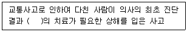
- 7일 미만
- 3주 이상
- 5일 이상 3주 미만
- 10일 이상 30일 미만
(정답률: 55%)
116. 세 갈래 교차로 ( ㉠ )와 네 갈래 교차로 ( ㉡ )의 교차상충의 수로 모두 옳은 것은?
- ㉠ 3개, ㉡ 8개
- ㉠ 3개, ㉡ 16개
- ㉠ 4개, ㉡ 16개
- ㉠ 9개, ㉡ 32개
(정답률: 46%)
117. 다음 중 사고를 초래하는 운전자의 행동과 가장 거리가 먼 것은?
- 법규위반(violation)
- 침착(patience)
- 착오(lapses)
- 실수(errors)
(정답률: 59%)
118. 교통안전진단의 목표로 거리가 가장 먼 것은?
- 해당 사업의 건설비를 최소화한다.
- 교통사고의 위험 및 정도를 최소화한다.
- 건설 후의 치료적 작업의 필요성을 최소화한다.
- 그 사업의 전공용기간의 관련 비용을 최소화한다.
(정답률: 53%)
119. 교통사고를 유발하는 위험요소를 찾아 분석하고 제거하며, 제거하지 못할 경우 운전자에게 미리 위험요소를 알려주어 보다 안전하고 올바른 주행을 유도하는 교통안전성 향상 기법은?
- Inclusive transport
- Positive guidance
- Social distancing
- Advanced clean transit
(정답률: 40%)
120. 어떤 차량이 평탄한 도로에서 50m의 스키드마크를 나타내며 충돌 없이 정지하였다. 이 차량의 제동 직전의 주행속도는? (단, 마찰계수는 0.5 이다.)
- 60 km/h
- 70 km/h
- 80 km/h
- 90 km/h
(정답률: 55%)